Вітальня «ДентАрту» · журнал «ДентАрт» 2022 №1
Ректор ПДМУ Вячеслав Ждан: «Час висуває нові вимоги до якості підготовки медиків»
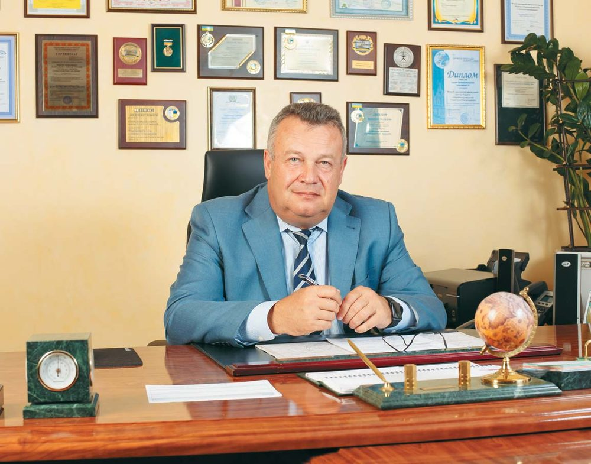
У Вітальні «ДентАрту» – ректор Полтавського державного медичного університету, академік Української академії наук, доктор медичних наук, професор Вячеслав Миколайович Ждан, і, ясна річ, говоритимемо передусім про стоматологію, хоча спектр наукових зацікавлень професора Ждана дуже широкий. Вячеслав Ждан – заслужений лікар і лавреат Державної премії України, член правління Асоціації сімейних лікарів України і голова Асоціації сімейних лікарів Полтавської області. Він автор майже 700 наукових праць…
Стоматологія залишається пріоритетним напрямком діяльності
— Вячеславе Миколайовичу, Полтавський державний медичний університет народився за рішенням українського уряду менше року тому, проте у 2021 році університет урочисто відзначив своє 100-річчя. Як так склалося з цим славетним ювілеєм?
— Історія нашого навчального закладу – це період реорганізації, перетворень, створень, і все це робилося на рівні держави, рішенням уряду. Читачі «ДентАрту» трохи познайомилися з цією історією, якщо читали четвертий номер журналу за минулий рік. Від створення у 1921 році одонтологічного факультету Харківської медичної академії – і до Полтавського державного медичного університету був ще стоматологічний інститут у Харкові (до речі, тоді в СРСР ліквідовували всі окремі стоматологічні інститути, залишили тільки два – Харківський та Московський). У 1967 році за рішенням уряду Харківський стоматологічний інститут переїхав у Полтаву і був реорганізований у Полтавський медичний стоматологічний інститут, який ми з Вами, Сергію, закінчували. Наступний етап реорганізації – Українська медична стоматологічна академія, яка вже стала добре відомою навіть у світі.
Створення на базі академії Полтавського державного медичного університету закономірне – з огляду на ті світові процеси, що відбуваються в медицині і медичній освітній галузі. Це вимога часу, а особливо коли ми розширюємо прийом на навчання іноземних громадян. Раніше у них виникало багато запитань щодо назви «стоматологічна академія». Що це? Вищий навчальний заклад чи ні? Державний чи приватний? Відтак ми змушені були запропонувати колективу подумати над тим, щоб змінити назву на загальноприйняту у світовій практиці. Це була справа не одного дня й місяця...
Рішення про зміну назви ухвалили на вченій раді УМСА. Дехто в колективі, до речі, тоді висловлював побоювання, що це робиться для того, щоб звільнити людей, але ми не втратили жодного викладача, не втратили жодної людини, яка допомагала нам і допомагає сьогодні в освітній і лікувальній діяльності. І я цим тішуся, оскільки колектив сталий, працює тривалий час, корифеї, які створювали базу закладу, – це наші учителі, ми їх шануємо і будемо шанувати… Час плине і висуває нові вимоги до якості підготовки медиків, і ми намагаємося іти у фарватері цих змін.
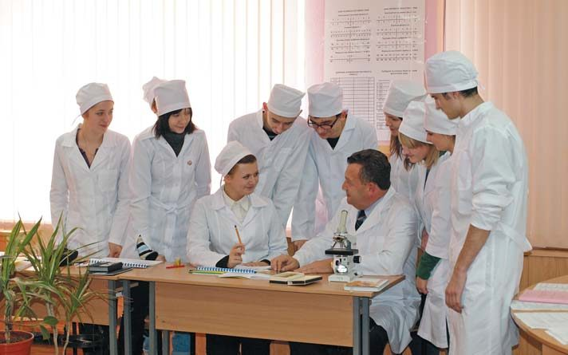
— Стоматологія залишилася у пріоритеті університету?
— Якщо навіть суто формально порахувати кількість коштів, які університет вкладає у розвиток матеріальної бази, то побачимо, що стоматологія справді у пріоритеті. За останні три роки ми повністю замінили парк стоматологічних установок, придбали чотири сучасні фантомні класи, які далеко не кожен навчальний стоматологічний заклад має, тим більше в такій кількості. Створюємо умови, щоб ці класи працювали навіть у вихідні, з черговими викладачами, аби студенти мали можливість, якщо є бажання, а бажання у багатьох є, потренуватися в цих залах, закріпити одержані знання і навички. Ми також закупили ортопантомограф, який буде в нашій стоматологічній поліклініці. Переоформляємо ліцензію на нашу медичну практику, рухаємося вперед…
— Тобто це буде університетська клініка?
— Вона і є де-факто і де-юре такою, але я хочу, щоб вона відповідала всім стандартам стоматологічної клініки, тому ми повністю замінили парк стоматологічних установок, а тепер будемо нарощувати лабораторно-діагностичну базу. Ясна річ, ми сьогодні піклуємося не лише про стоматологію. Говоримо про стоматологію як про один з пріоритетних напрямків діяльності і дбаємо про те, щоб школа, яка була створена у попередні роки нашими корифеями, не нівелювалася, а навпаки, розвивалася і поширювалася. Ми пропагуємо роботи наших учених, і нинішніх, і колишніх корифеїв стоматології.
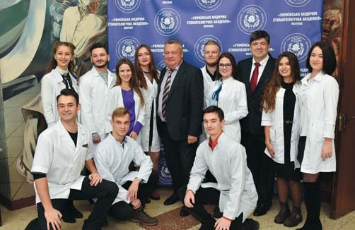
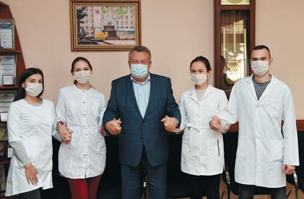
— У Вітальні читачі журналу «ДентАрт» зустрічаються з відомими стоматологами, і наше традиційне запитання запрошеним, що в плані профорієнтації прямо стосується вищої медичної освіти: як Ви стали стоматологом?.. А Вас я хочу запитати: ЧОМУ Ви не стали стоматологом?
— Почну від зворотного... На якому б стоматологічному форумі я не бував, і в ролі завідувача кафедри, і вже на посаді ректора, корифеї стоматології, дивлячись на мій бейджик з назвою УМСА, нерідко запитували: «Так Ви стоматолог чи кардіолог?». Я справді закінчив лікувальний факультет, і моя спеціальність – кардіологія, але стоматологія стала для мене немовби другою медичною спеціальністю. Тепер мене знають стоматологи, а я знаю їх, з усіма у мене дружні професійні зв'язки, не було, немає і, сподіваюся, ніколи не буде жодних непорозумінь.
Чому я відразу не обрав спеціальність стоматолога? Я навіть не можу докладно пояснити, чому став лікарем. У родині лікарів не було. Хворобливою дитиною я не був, навчався у спортивній школі і міг би піти й по спортивній чи тренерській стезі. А потім у дев'ятому класі я приїхав на день відкритих дверей у Полтавський медичний стоматологічний інститут. І коли пройшовся по цих пенатах, які тоді не були такими великими, щось відгукнулося у моїй душі на їх ауру, і я сказав собі: «Буду лікарем!». За період навчання змінювалися напрямки моєї спеціалізації, а закінчував я свою фахову підготовку уже на напрямку кардіології.
Чи шкодую за тим, що не обрав у юності стоматологію? Не знаю. Доля є доля. Не потрібно сьогодні гадати, що було б, якби я тоді поміняв спеціалізацію. Медик учиться все життя. І сьогодні я багато чого знаю і в стоматології. А якщо у мене виникають якісь дуже вузькопрофільні питання, то мій перший заступник – стоматолог, кличу його, і ми разом вирішуємо ці питання.
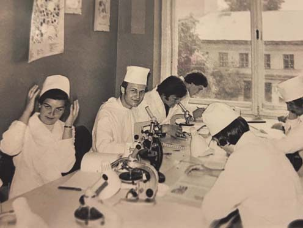
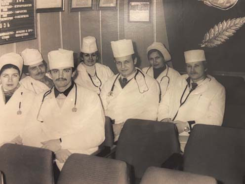
Хворі зуби – буде хворе серце…
— Як лікар і науковець, Ви відомий кардіолог, створили наукову школу, але ось уже майже 20 років очолюєте вищий медичний стоматологічний навчальний заклад і тому маєте перейматися проблемами стоматології… Наскільки міцний зв'язок між кардіологією і стоматологією? Чим кардіологія має бути цікавою і корисною для стоматологів?
— Ви свідок того, що коли я виступаю на наукових форумах, то часто говорю, що стоматологія і кардіологія пов'язані одна з одною. Тому що коли сьогодні у пацієнта хворі зуби, то буде обов'язково хворе серце і серцево-судинна система. На здоров'ї цієї людини позначиться те, що вона обиратиме харчі не з точки зору корисності, а з точки зору того, чи зможе вона їх пережувати. Так само і рідини вживатиме ті, які не викликатимуть подразнення хворих зубів чи ясен. А намагаючись притамувати біль, люди можуть шукати порятунку в алкоголі чи нікотині. Але ж причини болю нікуди не зникнуть. Ми сьогодні говоримо про запальні імунозалежні хвороби серця – той же ревматизм, системний вовчак, але їх пусковим механізмом є інфекційне ураження. Дуже часто першопричина серцевих хвороб – захворювання зубощелепної системи. І без санації та гігієни ротової порожнини, якої ми маємо навчити все населення, не зберегти і здоров'я серцево-судинної системи. Ми вчимо лікарів, що все починається з гігієни і профілактики, бо вже коли потрібне лікування, то це і наша з вами, лікарів, вина, що ми не розказали, не показали, не переконали…
Дуже часто першопричина серцевих хвороб – захворювання зубощелепної системи
— І не змусили…
— Безумовно… Тому сьогодні ні кардіологу, ні пульмонологу, ні неврологу без допомоги стоматолога не обійтися. Я професор кафедри терапії сімейної медицини і своїм студентам, курсантам завжди кажу, що при визначенні діагнозу передусім слід шукати джерело інфекції. І на першому місці ротова порожнина! Вдячний нашим стоматологам, що вони говорять не лише про захворювання зубощелепної системи, а й про те, що вони у багатьох випадках є першопричиною внутрішньої патології. Мультидисциплінарний підхід став нормою, а тому на лекції для студентів-стоматологів запрошуються фахівці внутрішньої медицини. На стоматологічному факультеті нашого університету досить потужна кафедра внутрішніх хвороб, її ми повністю забезпечили фантомним обладнанням, на якому можна вислуховувати шуми серця і легень, навчитися робити внутрішньовенні і підшкірні ін'єкції. Також створений і успішно функціонує суперсучасний симуляційний центр.
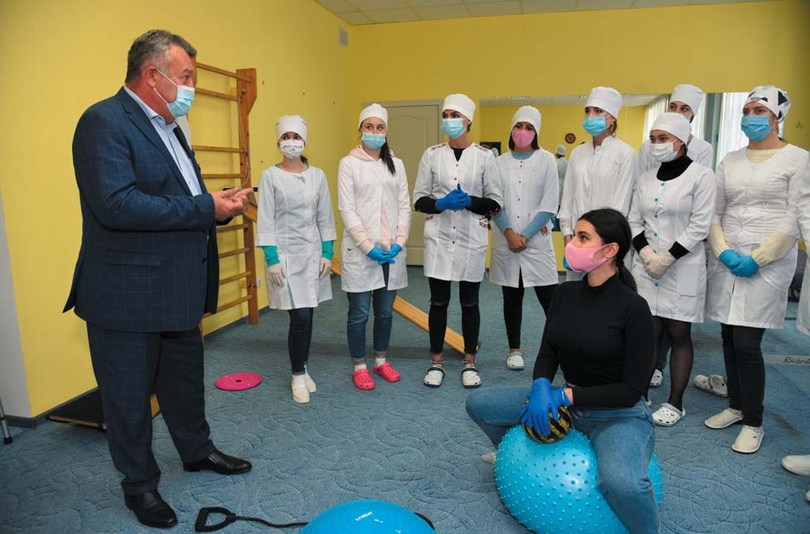
Відчуття сьогодення, бачення майбутнього, уміння працювати з людьми…
— Передаючи свої знання і традиції студентам, наступному поколінню в нашій професії, ми завжди пам'ятаємо про наших учителів, які свого часу передали свої знання і традиції нам. Хто з учителів мав найбільший вплив на Ваше формування як лікаря, науковця і керівника?
— Передусім це професор Микола Сергійович Скрипніков, який багато років був ректором УМСА. Він стоматолог за освітою, фахівець своєї справи. І вчитель-вихователь. Мені випало спілкуватися з ним і як студентові, і як посадовцеві, і як ректорові. І на всіх етапах нашого спілкування я щось брав від нього у скарбничку свого досвіду. Аналізуючи весь той період, який маю за спиною сьогодні, я вдячний Миколі Сергійовичу – Царство йому Небесне, його вже немає, на жаль, із нами, – за те, що він був потужним організатором, що невтомно розбудовував нашу академію-університет. Знаєте, є таке прислів'я: один керує, а всіх нудить. То я не можу згадати жодного моменту, щоб нудило. Іноді якесь рішення ректора могло спочатку здатися занадто сміливим чи передчасним, мовляв, не потягнемо цього проєкту, але зрештою практика засвідчувала, що він мав рацію. Уроки, які ми засвоювали від нього, – це відчуття сьогодення, це бачення майбутнього і – найголовніше і найважче – уміння працювати з людьми. Довести, розказати, показати і, головне, – переконати, що це потрібно не Ждану, який сидить у кабінеті, а університетові, його колективу і його студентам, – це важливо. Бо якщо люди не можуть комунікувати, якщо не вміти їх націлити на виконання їхніх завдань, то не варто чекати успіхів у навчально-виховній роботі і в розвитку університету.
І друга людина, якій я безмежно вдячний, – це Максим Андрійович Дудченко, з яким я познайомився ще 1979 року (торік на 102-му році життя, на жаль, його не стало). Військовий лікар, який гартувався у тяжких випробуваннях Другої світової війни, він навіки залишається для мене взірцем професіоналізму, прикладом мудрого ставлення до людей, до студентів, до навколишнього світу. Коли я не в настрої через те, що щось не виходить, як планувалося, а в такому стані, самі розумієте, можна зірватися і наговорити чогось різкого, я завжди згадую слова професора Дудченка: «Зупинися і піди пройдися». Допомагає! Як правило, після цього знаходиш більш-менш виважене рішення. Образити колегу легко, але це і в душі людини посіє смуток, і тобі самому це так не минеться.
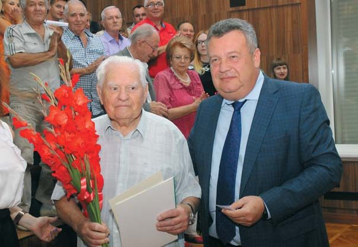
Сьогодні студенти більше прагнуть стати справді гарними фахівцями
— Поширений вислів про те, що Інститут/Академія/Університет є кузнею стоматологічних кадрів для системи охорони здоров'я, має зворотний бік – практична охорона здоров'я як замовник цих стоматологічних кадрів має оцінювати успішність і ефективність вищого закладу медичної освіти… Яку оцінку якості підготовки випускників стоматологічного факультету університету дають ваші замовники?
— За останні років п'ять ми не мали жодного звернення до адміністрації академії, університету з приводу того, що наш випускник допустився якихось професійних помилок, зумовлених недостатнім рівнем знань. Ніде правди діти, раніше бували такі ситуації, а зараз немає, і я вдячний і викладачам, і всім-усім причетним до підготовки наших студентів. Також, на мій погляд, це пов'язано з тим, що сьогодні студенти більше мотивовані не просто одержати диплом і десь працювати, а стати справді гарним фахівцем, який матиме і повагу людей, і гідний заробіток, а може, відкриє і свій кабінет чи клініку. У сьогоднішніх вступників є розуміння, що цього можна досягти, лише засвоївши все, що дає університет, – знання, практичні навички, досвід лікарів-наставників…
На професійну підготовку сьогодні може потрапити тільки той, хто набрав з профільної дисципліни із ЗНО не менше, ніж 150 балів. Відтак ми маємо справу з абітурієнтами, які приходять націленими на отримання глибоких знань, зазвичай вони володіють іноземною мовою. Безумовно, бувають і винятки, та загалом рівень підготовки наших випускників зріс. Ми маємо свою стоматологічну клініку, де працюють співробітники університету. Також залучаємо до процесу навчання приватні клініки, кабінети, людей, які мають досвід, можливість і бажання навчати молоде покоління лікарів. Стіни та обладнання самі не лікують і не навчать. Навчить та людина, яка хоче і уміє передати свої знання. Якщо цього не буде, все інше не має сенсу…
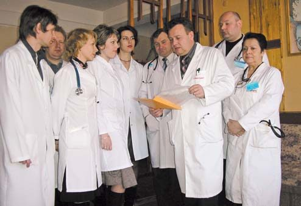
Не припиняй учитися – це закон життя!
— На гербі університету і на фасаді його морфологічного корпусу – девіз латинською мовою «Ne Discere Cessa». Чому університет обрав цей девіз і як ним керується у своїй діяльності?
— Ясна річ, не я обирав цей девіз, але він надзвичайно влучний, і ми його дотримуємося. Не припиняй учитися – це закон життя! А лікаря – тим більше, тому що наша професія надзвичайно тісно пов'язана з прогресом не тільки в нашій галузі, але й у інших. З'являються нові технології, матеріали – і це відкриває можливості для розробки нових методів лікування і в стоматології, і в загальній медицині. І чим швидше лікарі ними оволодіють – під час післядипломної освіти, на курсах, семінарах, тим ефективніше зберігатимуть здоров'я своїх пацієнтів. Університет має факультет післядипломної освіти. Щороку збільшується кількість курсантів, які звертаються сюди для навчання. Їдуть навіть з тих областей, де, здавалося б, ближче до Києва, Харкова, Дніпра… Очевидно, ці люди живуть, керуючись тим принципом, що став девізом нашого університету.
— Коли морфологічний корпус тільки збудували, вахтерам, які там чергували, не було спокою: люди заходили і питали, що то на фасаді написано. Не могли байдуже пройти мимо…
— Тепер суспільство більше комп'ютеризоване, тож кожен, хто не знає латини, може перекласти цей афоризм, скориставшись своїм ноутбуком чи смартфоном.
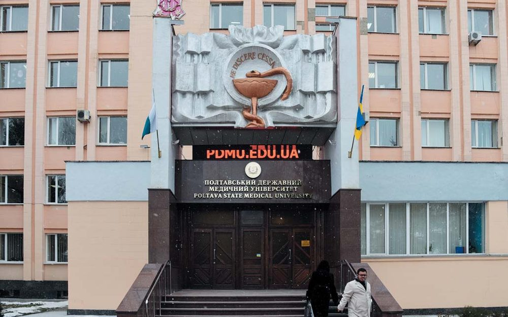
Університети вже мають більше самостійності
— В усьому світі університети незалежні та самоврядні і в науці, і в освіті, і в господарстві, маючи при цьому обов'язкову фінансову підтримку держави. Коли ми зустрічалися під час інтерв'ю багато років тому, Ви скаржилися, що гроші заробляє Академія, а розпоряджається заробленим Міністерство як власник закладу від імені Держави… Наскільки нині Полтавський державний медичний університет є незалежним і самоврядним у всій своїй діяльності?
— З того часу, як ми зустрічалися, не дуже багато чого змінилося, але все-таки деякі підходи зазнали позитивних змін. Міністерство зрозуміло, що для того, щоб університети мали можливість розвиватися, нам треба дати більше самостійності, зокрема й у питаннях, які вирішуються на місцях, з місцевою владою. Те, що говорить міністр, є генеральною лінією, але є деякі нюанси, що стосуються університетів Полтави, Харкова, Дніпра, інших міст, і слава Богу, нас уже почули. Так, справді, кошторис університету затверджує Міністерство охорони здоров'я, але ми маємо тепер можливість класти на депозит зароблені кошти – це коли студенти проплачують навчання наперед або ми кошти заробили на госпрозрахункових операціях. Раніше ці кошти лежали в казначействі і не приносили жодної користі університетові. Тепер маємо право спрямовувати їх на розширення матеріально-технічної бази. Тож закуповуємо і стоматологічне, і хірургічне обладнання, і фантомні класи, і всі матеріали для кафедр. Намагаємося нікого не обділити, хоча стоматологію і маємо в пріоритеті.
Також маємо можливість матеріально заохочувати працівників преміями (до речі, не у всіх вищих навчальних закладах Полтави це роблять). Ось до нового 2022 року премії призначені всім без винятку, але в залежності від внеску в роботу університету – хто більше працює, той і премію має більшу. І це ми робимо за наші власні гроші, які заробляємо! Сьогодні держава нас фінансує лише на заробітну плату викладачів, які навчають студентів-бюджетників, на стипендії цим студентам та частково дітям-сиротам і на комунальні платежі, але тільки відсотків 20 від потреби, а решту треба заробити самим. Хоча лікарів у країні сьогодні не вистачає...
Є ще одна проблема. На сьогодні в Україні зареєстровано майже 90 закладів вищої освіти, які готують лікарів. З них тільки 14 – наші класичні медичні вузи, які залишилися, 3 заклади вищої післядипломної освіти, є потужні факультети при Університеті Каразіна, непоганий факультет у Сумах, але багато закладів, на жаль, – цілковита профанація. Маючи якісь дві кімнати, отримують ліцензію – і вчать на лікаря… Або інший приклад. Наша Полтавська політехніка відкрила факультет фізичної реабілітації. Не розумію, як вони вестимуть навчання цій спеціальності, оскільки вона з розряду медичних. А якщо це медицина – це вже крок 1, крок 2, крок 3… А крок – це питання, пов'язані з анатомією, фізіологією… Вступники, а це переважно масажисти, ідуть туди, щоб папірця отримати…
— От що потрібне було б стоматологам з того, що вивчають у техуніверситетах, так це опір матеріалів…
— І кафедра фізики, яка б давала ці знання…
В університеті навчаються студенти із 34 країн світу
— Як студентська спільнота бере участь в управлінні університетом, як відстоює свої права на отримання якісної медичної освіти?
— На кожному факультеті є студентська організація, яка опікується студентськими справами, діють студентський парламент, який обирається студентською спільнотою, студентська рада. Доводилося чути, що це ми щось беремо від комсомолу, але сьогодні всі вже розуміють, що це нормальна і дуже корисна система, яка об'єднує студентів усіх факультетів, усіх курсів, навіть іноземців, котрі мають свій структурний підрозділ і входять у загальноуніверситетську спільноту. Ми фінансуємо діяльність студентського парламенту, його заходи.
— У полтавський період своєї історії практично всіх випускників медичного стоматологічного інституту розподіляли на роботу в Україні, а тепер коли зайдеш в університет, у його авдиторіях чути мови ледь не з усього світу… Якою є міжнародна активність університету в підготовці стоматологів для інших країн?
— Нині у нас навчаються студенти із 34 країн, маємо 1340 студентів-іноземців, третина з них навчається на стоматологічному факультеті, а дві третини – на медичних. Раніше співвідношення було іншим: більше було студентів, які вивчали стоматологію, тривалий час було порівну з лікувальниками, а тепер студентів-стоматологів стало менше. Чому? У тих країнах, звідки приїжджає найбільше студентів, а це Єгипет, Марокко, Туніс, Йорданія, зрозуміли, що підготовка стоматологів може бути прибутковою справою, і стали масово відкривати приватні навчальні заклади. Природно, що тим молодим людям, котрі не мають багато коштів, легше здобувати освіту вдома, ніж їхати в іншу країну. Навчання на стоматолога в Австрії сьогодні коштує 20-22 тисячі євро на рік, а в нашому університеті – 4-4,5 тисячі доларів на рік (приблизно така ж сума піде ще на харчування та проживання), це не для всіх фінансово доступно. Але все-таки ми маємо найбільшу кількість студентів-стоматологів-іноземців серед усіх медичних вузів України.
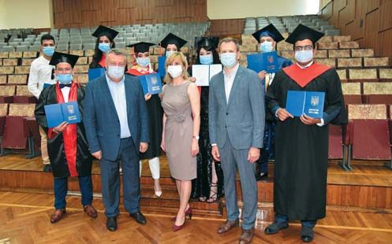
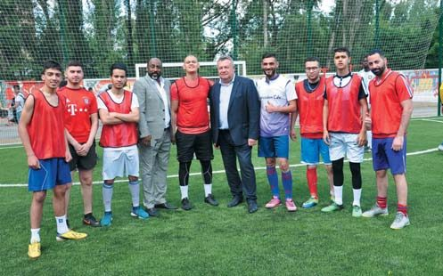
Головним у стоматології залишиться людський фактор
— Ректор як вища посадова особа університету має бути передусім візіонером, який бачить майбутнє вищого закладу освіти на багато років наперед. Якими Ви бачите університет і стоматологічний факультет через 10, 20, 30 років? Якою, на Вашу експертну думку, буде через десятиліття українська стоматологія взагалі?
— Питання і складне, і просте. Передусім хотілося б бачити стрімкий прогрес у технологіях, включно з роботами і всім іншим. Але жоден робот, жодна машина не замінить людський розум і ті знання, які можна отримати, спілкуючись один з одним. Коли твою руку спрямують, коли тебе поправлять, якщо ти щось не так робиш. Скільки б ми чого не придумували, зуб є зуб, лікувальний процес вдосконалюватиметься, але його принципи збережуться: міждисциплінарний підхід, мінімально інвазивне втручання, профілактика… Головним у стоматології залишиться людський фактор. Тому ті, хто після нас навчатиме і виховуватиме нові покоління стоматологів, не повинні втратити те, що ми маємо сьогодні, а якщо їхні знання будуть кращі, перспективніші – дай Боже!
— Чи маєте час і натхнення на якесь захоплення, що допомагає Вам зняти стрес і уникнути професійного вигорання?
— Тільки такі захоплення і дають мені можливість ефективно (наскільки – то вже людям судити) працювати на такій нелегкій посаді. Двічі на тиждень у мене бадмінтон (тільки відрядження може це відмінити). Моя родина знає, що в сезон полювання чи риболовлі на батька і дідуся у суботу нічого розраховувати, бо я або буду на полюванні, або з вудкою на березі сидітиму.
— Але бадмінтон все-таки – частіше…
— Частіше. От і вчора набігався тільки так!..
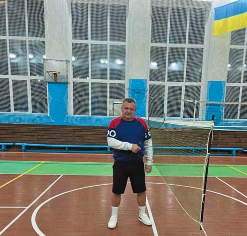
— І ще одне традиційне запитання до гостей Вітальні: яке Ваше побажання читачам журналу «ДентАрт», стоматологам, серед яких багато випускників Полтавського медичного Інституту/Академії/Університету?..
— Мені завжди подобається Ваше, Сергію, побажання, яким Ви часто завершуєте свої вітання: «Міцного стоматологічного здоров'я!». Я його теж усім колегам сьогодні побажаю, але кардіологічно-стоматологічного. Ми завжди говоримо про здоров'я, та, на жаль, звертаємо на нього увагу тоді, коли десь щось у нас починає не так стукати, боліти, і це стосується не тільки медиків, а й усіх. Я хотів би, щоб ми якомога раніше прислухалися до свого здоров'я, дбали про нього, щоб якомога довше прожили без втручання стоматологів і кардіологів. А щоб хвороби профілактувати, потрібне не лише спокійне, сповнене доброти і любові спілкування з рідними, друзями, а й іноді екстремальні види спорту, відпочинку. Розумне, природне, виважене поєднання всього і вся – основа для того, щоб ми мали можливість ще довгі роки працювати, а наші учні – дивитися, вчитися і наслідувати. Але довго вчитися, а не довго вчити…
— Дякую за розмову! Хай наш рідний Університет буде гордістю і для майбутніх поколінь викладачів і студентів!
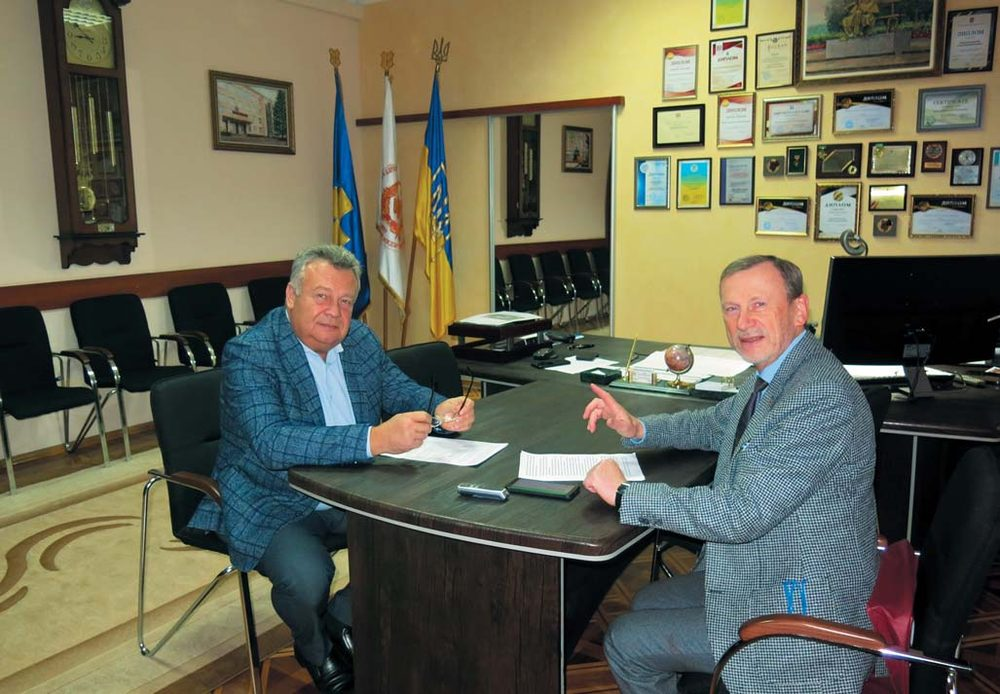